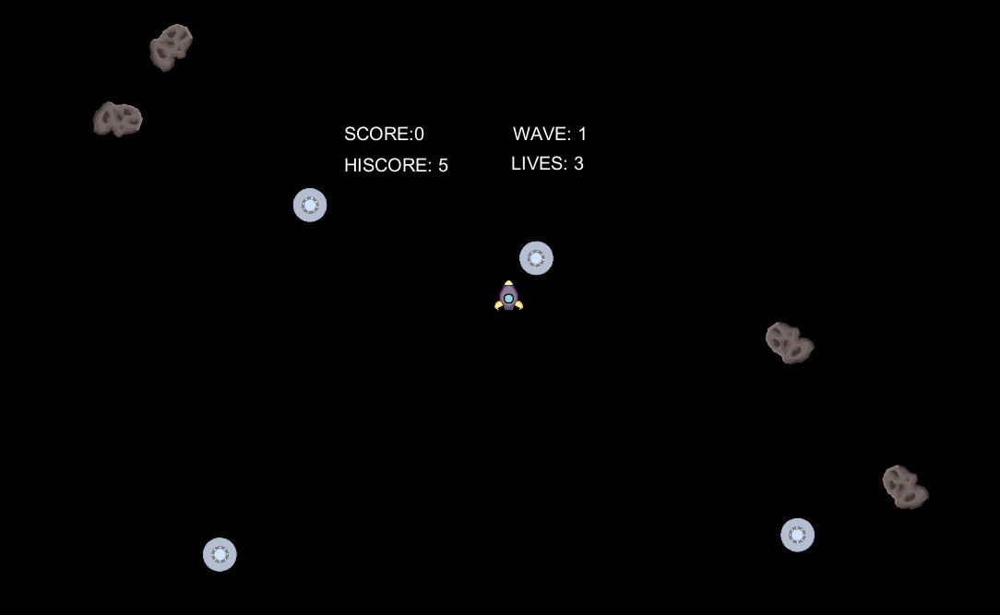
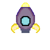

March 28, 2019
The name of my game is UFO. The player controls the rocket ship and the objective is to shoot the asteroids and spaceships. The keys are W for going forward, A for turning left, S for going backwards, D for turning right, and the left mouse click for shooting laser beams. The player has three lives and if the asteroids and spaceships touch the rocket ship three times, the score will reset back to zero. To move onto the next wave, the player must shoot all the spaceships in that wave.

My role in this game project is being the designer and the artist. As a designer, I play tested the game and I gave my partner some feedback on what should be included into the game. I also show my friends who were outside from this class this game and allowed them to playtest it. As an artist, I created the asteroids, spaceship, laser beam, and rocket ship. I used photoshop and drew all the images in pixel style from scratch. In photoshop, I created grid lines on both x axis and y axis and used the pencil tool at one pixel size.

One of the playtester, Chris Ngai from Art 108 class, playtested the game. When I was watching him play, he was very focused on shooting the aliens and asteroids. I saw him struggle a little with controlling the movement of the rocket ship. Later on the next few rounds, he just stayed in the middle of the space where the rocket ship was spawned and just kept turning and shooting lasers. He told me how the game was very fun and challenging. He also told me the scoring criteria wasn’t clear and wished the scoring wasn’t in the middle of the screen. He mentioned that there should be a background image included in the game and changes on the spaceship since it did not look like one.
Another playtester, Raymond Dao, playtested the game also. When I was watching him play, he was trying to shoot all the aliens and trying to avoid the asteroids as much as he can. He mentioned to me how controlling the rocket ship was difficult but he understood that this was in a space setting and that this is part of the challenge. Like Chris, Raymond decided to stay in the middle and just turned the rocket ship and kept shooting lasers. Raymond’s response was very similar to Chris’s response about the scoring criteria and the background image. Raymond mentioned how he wished there was a background music going on rather than just a laser beam sound. He also wished that the space ships would have a special move such as shooting lasers so that the player can move the rocket ship instead of staying in the middle and rapid fire laser beams. Overall, Raymond also thought that the game was very fun and challenging.